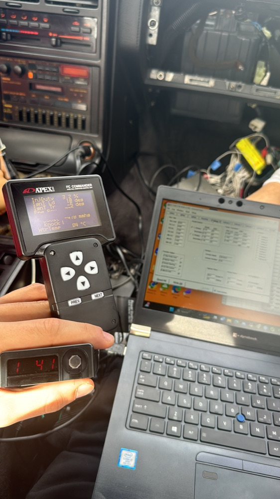
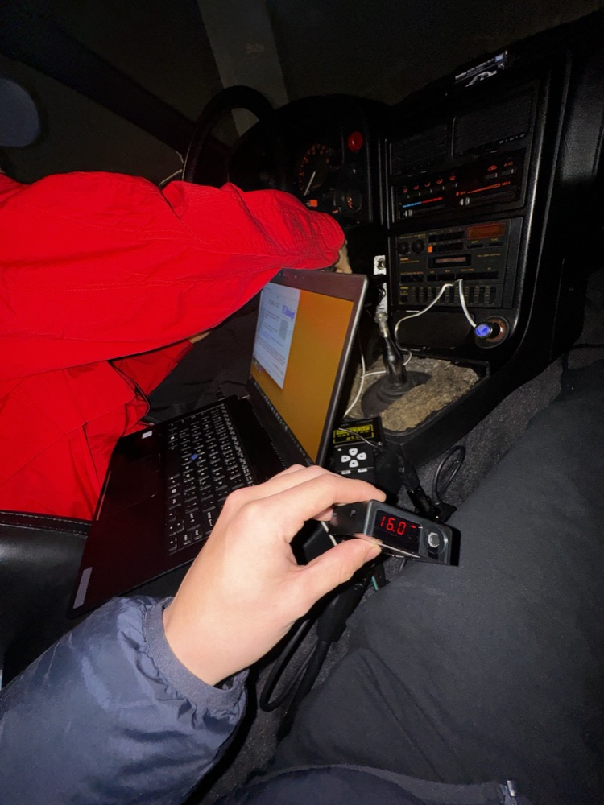
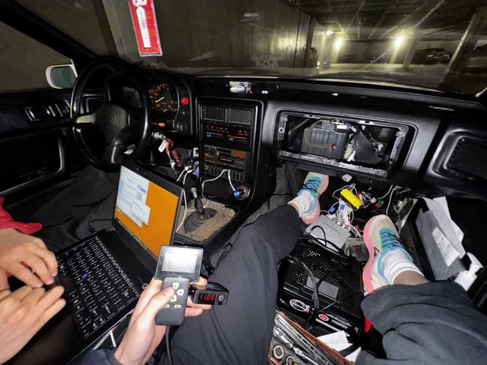

Some time during Covid my friend and I street tuned his 10ae FC RX-7 on an APEXI FC commander. It was a really cool experience with an old piece of tuning tech. I was a shock seeing an old fuel map compared to modern 3d graphs. There was not a ton of wiring to figure out, however, making sure the Apexi read all the electronic signals and mechanical signals from the car right was a process that took a lot of the afternoon.


